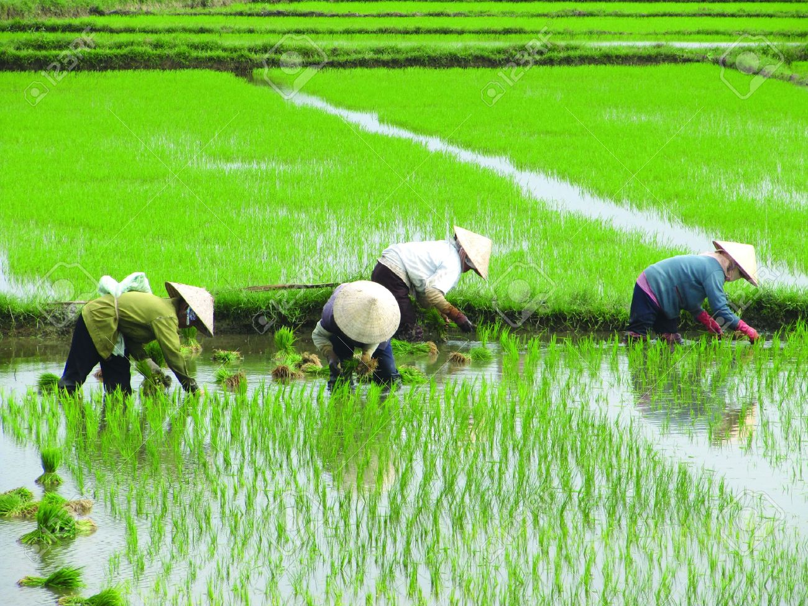
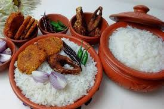
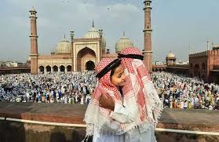

Culture Of Bangladesh
1 / 6

Ramna park in Dhaka
2 / 6

Rural view
3 / 6

Panta hilsha
4 / 6

Eid Day
5 / 6

People with boat in field
6/ 6

National sports in BD
Bangladesh is a melting pot of races. She, therefore, has a mixed culture. Her deep rooted heritage is amply reflected in her architecture, literature, dance, drama, music and painting. Bangladeshi culture is influenced by three great religions- Hinduism, Buddhism and Islam in successive order, with Islam having the most pervading and lasting impact. Like a colorful montage, the cultural tradition of the country is a happy blending of many variants, unique in diversity but in essence greatly symmetrical.
A series of festivals varying from race to race are observed here. Some of the Muslim rites are Eid-e-Miladunnabi, Eid-ul-Fitr, Eid-ul-Azha, Muharram etc. Hindus observe Durga Puja, Saraswati Puja, Kali Puja and many other pujas. Christmas ( popularly called Baradin in Bangla ) is observed by Christians. Also there are some common festivities, which are observed countrywide by people irrespective of races. Pahela Baishakh (the first day of Bangla year) is such a festival. National festivals are Independence Day (26th March), 21st February (the National Mourning Day and World Mother Language Day), The Victory Day (16th December), Rabindra & Nazrul Jayanti etc.
Bangladeshi women habitually wear Sarees. Jamdani was once world famous for it’s most artistic and expensive ornamental fabric. Moslin, a fine and artistic type of cloth was well-known worldwide. Naksi Kantha, embroidered quilted patchwork cloth produced by the village women, is still familiar in villages and towns simultaneously. A common hairstyle is Beni (twisted bun) that Bangalee women are fond of. Traditionally males wear Panjabis, Fatuas and Pajamas. Hindus wear Dhuty for religious purposes. Now-a-days common dresses of males are shirts and pants.